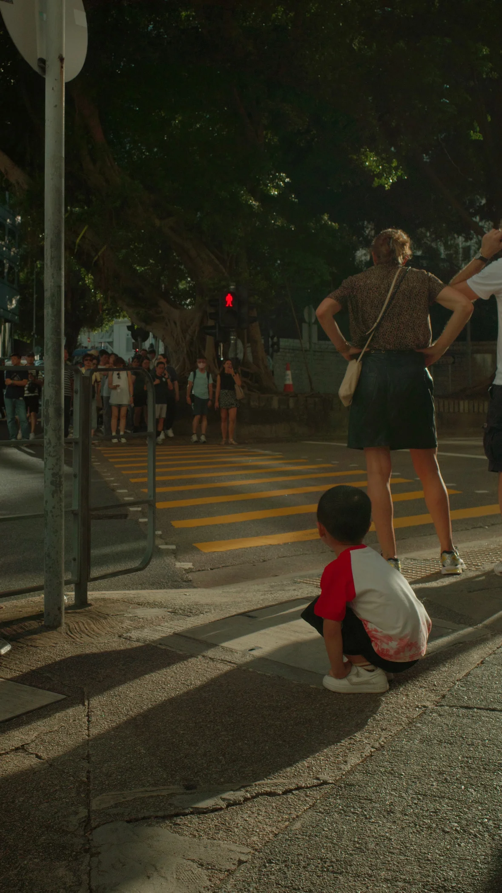

01 / China · Hong Kong · Greece
Streetrhythms
Signs, crossings, shopfronts and people passing through—the city arranging itself for a fraction of a second.

In the flow
Cities speak in layers: old walls, new towers, fluorescent menus, a gesture at the curb.
Made while walking through Hong Kong and China, with small echoes from Greece. The sequence moves from open daylight into neon.
“The street is never still; the photograph is only the moment it briefly agrees to be a picture.”
Next seriesOutdoor →